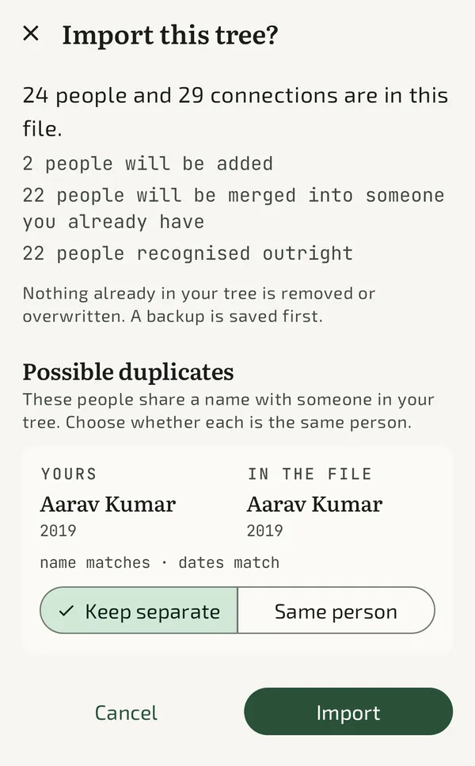
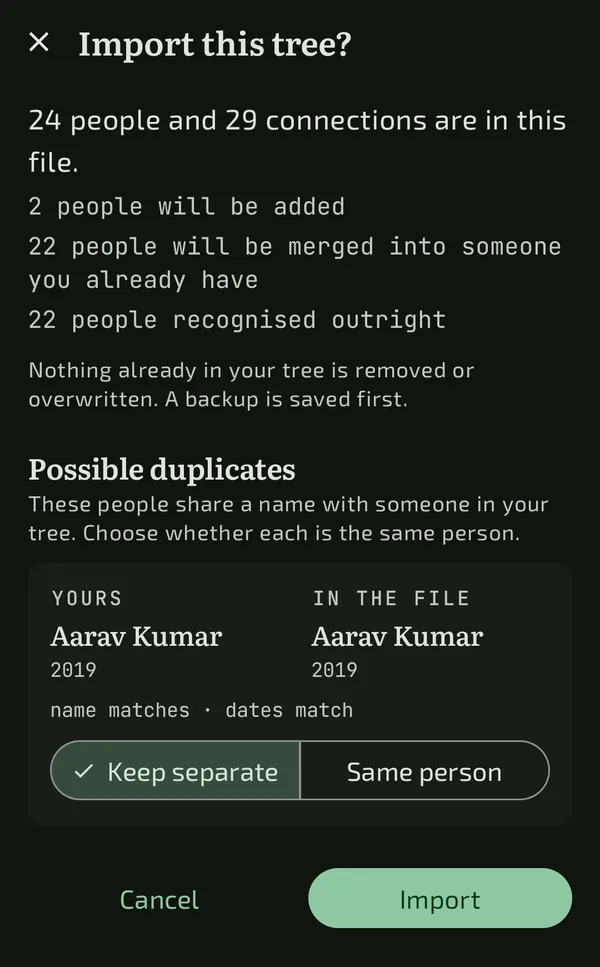

Share a branch, not the whole tree
A relative rarely needs your entire family. f-tree shares one person, everyone descended from them, and the partners of all of them. What stays behind is everything above and beside that person: their parents, their siblings and their siblings’ children. Sending a branch should not quietly hand over the rest of your family.
A relationship travels only when both ends do, so a shared branch never carries a link to somebody who was left out.
An import adds; it never replaces
Nothing already in your tree is deleted and no existing value is overwritten. The worst an import can do is add someone who turns out to be a duplicate, and that can be merged afterwards. The opposite mistake, silently collapsing two real people into one, cannot be undone. Every default follows from that.


How matches are judged
f-tree matches in passes, so each confirmed match becomes evidence for that person’s relatives. Two people with the same name are far likelier to be the same once their father has already matched.
| What the file shows | What f-tree does |
|---|---|
| It records that this person came from a tree you already hold | Merges without asking |
| Same name, and a relative who already matched | Proposes a merge |
| Same name and nothing else | Proposes keeping them separate |
| Dates that cannot both be true, or no name at all | Does not match them |
Names are compared past accents, punctuation and spacing, but never abbreviations. Guessing that “R. Kumar” is “Raj Kumar” is how a merge quietly destroys data.
Read the review before you import
Before anything changes, f-tree tells you what it is about to do: how many people are new, how many will be merged into someone you already have, and which pairs it is unsure about. For each possible duplicate you see both records side by side with the evidence, such as “name matches, dates match”, and choose Keep separate or Same person.
Merging fills gaps only
When two records are the same person, an empty field takes the imported value. A field that already says something keeps saying it, and the disagreement is reported rather than resolved for you.
A backup is written first
Every import saves a backup of your tree before it touches anything. Importing the same file twice, or your own export, changes nothing, because every record remembers where it came from.
Joining two families with one connection
There is no special “merge two trees” mode, because a family tree is a graph and a marriage is a link in it. Import the branch, then connect one person in it to one person in yours, with a marriage or a parent link. The two families are now one tree: your wife’s father is your father-in-law, her brother is your brother-in-law, and the relationship finder can walk between them.
A checklist before you merge anything
- Ask your relative to export or share from the same app, so people carry their origins with them.
- Agree how you each spell names that have several spellings.
- Keep your own copy of your tree before you start, as well as the automatic backup.
- When unsure whether two people are the same, choose Keep separate. A duplicate is easy to fix later.
What about GEDCOM?
GEDCOM is the long-standing interchange file for genealogy software. f-tree does not import or export it yet. It uses .ftree, a ZIP holding a plain tree.json and your photos, documented in the repository. A relative’s tree that exists only as a GEDCOM file cannot be imported directly today.
Bring two sides of the family together
Free on Android, Windows and Linux, with a backup before every import.